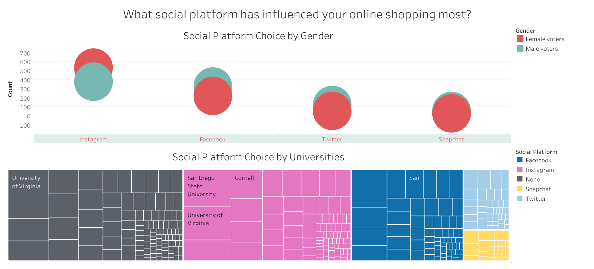

Portfolio
Social Platform Shopping by Millennials in 2016
Objective
To find out the correlation between social platform notification badges and online shopping. Two questions were asked for the purpose of this project are:
- You open ur phone and have a notification badge on Instagram, Facebook, Snapchat, and LinkedIn...which do you click first?
- What social platform has influenced your online shopping most?
Datasets
Social Influence on Shopping and Which Social Platform Millennials Care about the Most data provided by Adam Halper on data.world. The files are in csv format.
Strategy
Two clean looking dashboards with necessary information were needed for visualization. For the colours, I have chosen the same colors based on the original social platforms. This way, the audience could identify each platform easily. For the graphs, I have chosen bar graphs, bubbles graphs, and treemap chart. The Y-axis in the bar graph is the count measurements to show the total amount of votes for each item in the X-axis. The size of the bubble in bubble graph and the square in treemap chart represents the number of votes.
Data Cleaning & Modeling
The datasets were clean and straightforward so not much cleaning is needed. I did remove the question column to focus the attention on actual data. For table join, I did a union join on all the tables from the two datasets, so Tableau knows how to display all the dimensions and measurements.
Dashboard

The visualization above illustrates four social platforms based on the dataset. Snapchat is the most frequent opened for millennials based on student votes in each university. Instagram is the second most popular clicked on when seeing notification badges. This mean they are more popular than other platforms.
The visualization above illustrates four social platforms, replacing LinkedIn with Twitter, and one “none” response. Based on the graph, the majority of millennials that are in university get more influenced by Instagram than other social platforms. Although, there are a lot people who do not get influenced by social media, which is represent in the black color area.
Conclusion
Social media are on the rise and every notification badge count. Having Instagram being the most influential social media and the second most popular social platform when clicking on notification badges, I can predict that Instagram does have a significant impact to online shopping for millennials. Hence, Instagram is our main platform to target for millennials. Although Snapchat is the most popular platform based on opening notification badges, it has the least influence on millennials. This may due to improper advertising feature or lack of marketing strategy.